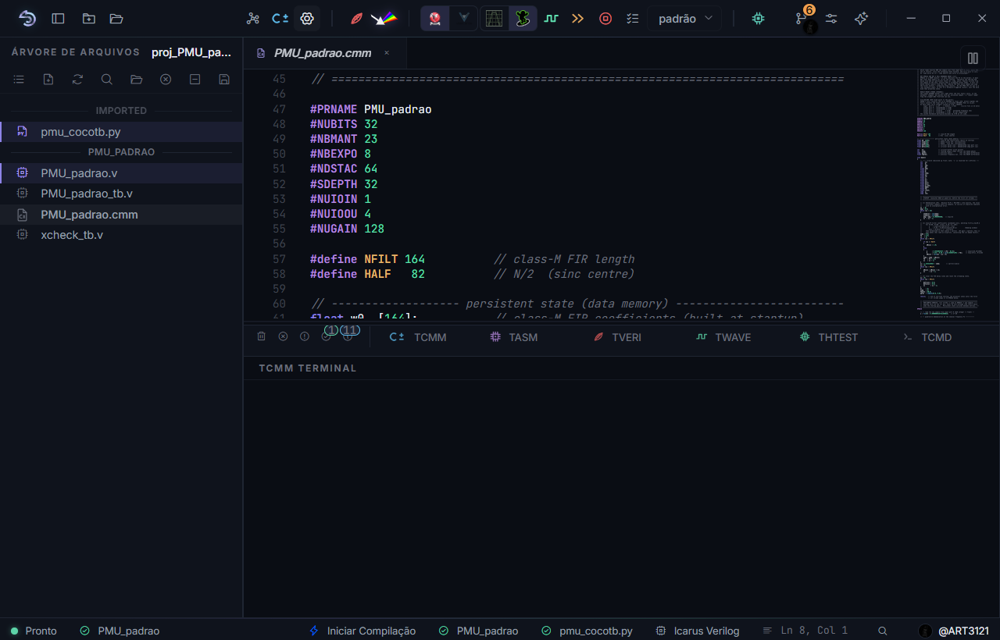
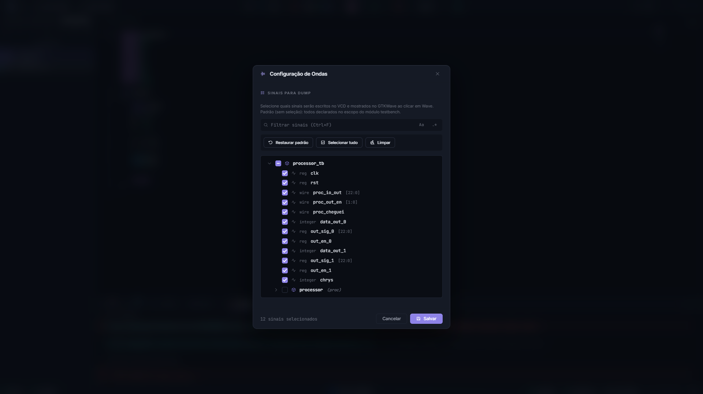

Fluxo completo para processadores SAPHO¶
Esta página é o roteiro de referência do fluxo SAPHO, para consulta quando você já conhece o caminho e precisa conferir uma etapa ou tratar um caso menos comum. Se esta é a sua primeira vez, faça antes o Primeiro projeto: um filtro de média móvel, que percorre o mesmo caminho ensinando cada conceito.
{kind=link}

Figura 16 Ao abrir um algoritmo C±, o processador correspondente fica ativo e as ações relacionadas a ele são habilitadas na barra superior.¶
O caminho em uma olhada¶
flowchart TD
A["1 · Projeto .spf"] --> B["2 · Processador<br><small>Hub de Processadores</small>"]
B --> C["3 · Algoritmo C±"]
C --> D["4 · Compilar<br><small>Verilog + .mif + testbench</small>"]
D --> E["5 · Top-level e testbench"]
E --> F{"6 · Forma<br>de execução"}
F --> G["Teste do processador<br>sintetizado"]
F --> H["Execução rápida"]
F --> I["Analisar Verilog<br>(forma de onda)"]
I --> J["7 · Inspecionar<br><small>ondas e PRISM</small>"]
1. Criar ou abrir o projeto¶
Clique em Novo Projeto, informe um nome sem espaços nem acentos e escolha uma pasta com permissão de escrita.
O arquivo .spf criado pela AURORA registra os processadores, as fontes e as seleções do projeto. Ele é JSON legível e amigável a diffs, mas a AURORA é a sua única escritora: não o edite à mão no fluxo normal. Detalhes em Projetos.
2. Criar o processador¶
Abra o Hub de Processadores, informe o nome e os parâmetros e confirme em Gerar Processador. No primeiro projeto, mantenha os valores de fábrica, que já formam uma configuração válida.
A referência de cada campo, das validações e do que é gerado está em Criar e configurar processadores; o significado de cada parâmetro em termos de hardware, em O processador SAPHO por dentro.
Depois da confirmação, o processador aparece na árvore com as três subpastas:
<processador>/
├── Software/ o algoritmo C± editável
├── Hardware/ o Verilog e as memórias, gerados
└── Simulation/ o testbench, os estímulos e as saídas
3. Escrever o algoritmo C±¶
Abra Software/<processador>.cmm, preserve as diretivas geradas e escreva o algoritmo. Salve antes de compilar: os compiladores leem o conteúdo gravado no disco, não o que está no editor.
A linguagem inteira está documentada em A linguagem C±: fundamentos. Para testes que precisam identificar o término do algoritmo, use #TOAQUI no ponto adequado.
4. Gerar o hardware¶
Mantenha o arquivo
.cmmaberto e em foco.Clique em Compilar C±.
Acompanhe os terminais TCMM e TASM.
Aguarde a criação ou atualização dos arquivos em
Hardware.
O YANC transforma o algoritmo em assembly, depois gera o módulo Verilog, as imagens de memória e o testbench padrão. O detalhamento dos três estágios está em Compilação: de C± a Verilog.
Aviso
Um arquivo antigo em Hardware não comprova que a compilação atual passou. Confirme o resultado nos terminais.
5. Definir top-level e testbench¶
O módulo em Hardware/<processador>.v pode servir como top-level quando o projeto testa apenas esse processador. Clique nele com o botão direito e escolha Definir como Top Level.
Em sistemas maiores, o top-level é outro módulo Verilog, escrito por você, que instancia um ou mais processadores gerados junto com a infraestrutura convencional de hardware. Esse é o padrão de projeto do SAPHO, discutido em O processador SAPHO por dentro.
Como testbench, escolha uma das três opções:
O Simulation/<processador>_tb.v produzido pela compilação. Gera clock e reset, lê os estímulos de input_<i>.txt e grava as saídas em output_<i>.txt. Basta para a maioria dos projetos de um único processador.
Um .v escrito por você, quando o estímulo exige lógica que os arquivos de texto não expressam, ou quando o teste envolve vários blocos.
Um .py com a diretiva # aurora-toplevel: <processador> em comentário, ou herdada da configuração do projeto. Indicado quando a verificação se beneficia de NumPy, SciPy e asserções legíveis. Veja Simular com Icarus, Verilator ou cocotb.
Clique com o botão direito no arquivo escolhido e selecione Marcar como Testbench. Confirme os dois papéis na barra de status antes de simular.
6. Escolher a forma de execução¶
Ação |
Quando usar |
|---|---|
Teste do processador sintetizado |
Validação rápida de entradas, saídas e término, sem inspeção visual. Usa um harness do Verilator e reporta no terminal THTEST |
Execução rápida |
Verificações automatizadas e regressões curtas, sem abrir formas de onda |
Analisar Verilog (forma de onda) |
Quando você precisa observar sinais, portas e estados internos ao longo do tempo |
7. Conferir entradas e saídas¶
Nos processadores gerados, out transporta o valor e out_en identifica a porta de saída escrita. O sinal cheguei indica que a execução alcançou o marcador #TOAQUI.
Um teste adequado verifica:
se cada porta recebeu os valores esperados;
se a quantidade e a ordem das saídas estão corretas;
se o processador alcançou o ponto de término;
se existe um limite de ciclos que evita espera infinita.
8. Analisar o hardware gerado¶
Use Analisar Verilog (forma de onda) para observar o comportamento temporal e Abrir PRISM para examinar a estrutura RTL.
{kind=link}

Figura 17 No fluxo SAPHO, comece por clk, rst, as portas de saída e o sinal de término. Expanda o processador somente quando precisar investigar sinais internos.¶
Importante
O algoritmo .cmm continua sendo a única fonte editável. Os arquivos da pasta Hardware são resultado da geração e serão substituídos na próxima compilação: qualquer edição manual neles se perde.
Resultado esperado¶
O fluxo está concluído quando:
o Hub de Processadores criou a estrutura do processador;
o algoritmo
.cmmcompila sem erro;o Verilog e as imagens de memória estão atualizados;
o top-level e o testbench aparecem corretamente na barra de status;
a execução produz as saídas esperadas e alcança o término;
o visualizador de ondas ou o PRISM apresenta o resultado desejado, quando utilizado.
Leitura relacionada¶
A linguagem C±: fundamentos para escrever o algoritmo.
Criar e configurar processadores para os campos do Hub e as configurações de simulação.
Galeria de projetos e testbenches para exemplos C± com testbenches Verilog e cocotb.
Fluxo completo para projetos Verilog se o seu projeto não gera processadores e trabalha só com RTL.